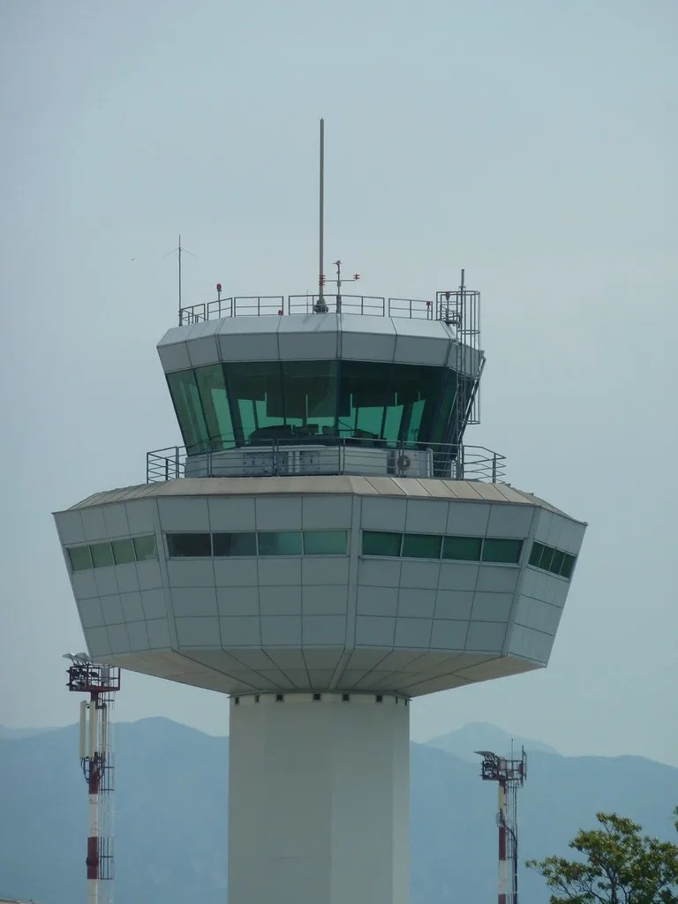
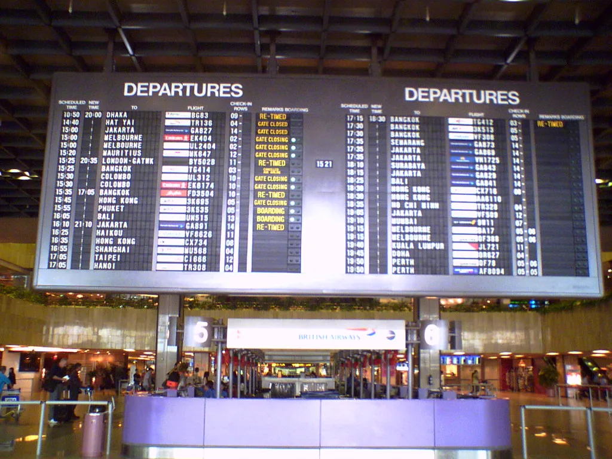

미국 연방항공청(FAA)이 현지시간 13일 항공관제 통신 장애를 이유로 미국 내 모든 공항의 항공기 출발을 멈춰 세우는 '전국 그라운드 스톱'을 발령했다. 그라운드 스톱은 지상에 있는 항공기의 이륙을 일시적으로 금지하는 조치로, 이미 하늘에 떠 있는 항공기는 목적지 공항에 착륙할 수 있다. 미국 전역 단위로 이 조치가 내려진 것은 2023년 1월 이후 처음이어서 항공업계와 여행객들에게 큰 혼란을 안겼다.
FAA는 여러 곳의 항로관제센터에 영향을 준 통신 문제가 발생해 이 같은 결정을 내렸다고 밝혔다. 항로관제센터는 공항 주변을 벗어나 순항 고도로 비행하는 항공기를 넓은 구역 단위로 관제하는 시설이다. 숀 더피 교통부 장관도 지역 항공관제센터들의 통신 문제라고 설명했다. 기술자들이 정확한 원인을 조사했으며, 국토안보부는 현재로서는 고의적인 공격으로 볼 만한 징후는 없다는 입장을 내놨다.

조치가 내려진 시점은 항공 수요가 많은 금요일 오후였다. 항공기 추적 서비스 플라이트레이더24에 따르면 당시 미국 공항으로 향하던 항공기 약 3100대가 공중에 떠 있었다. 또 다른 추적 서비스 플라이트어웨어는 오후 3시 49분 기준으로 약 7000편이 지연되거나 취소된 것으로 집계했다. 연결편을 놓친 승객들이 공항에 발이 묶이면서 주요 허브 공항마다 혼잡이 빚어졌다.
항공사들은 대응에 나섰다. 일부 항공사는 승객들이 추가 요금 없이 여정을 바꿀 수 있도록 일정 변경 수수료 면제를 제공했다. 대형 항공사들은 운항 차질이 그날 남은 일정 내내 이어질 수 있다고 안내했다. 한 번 멈춘 운항 스케줄은 항공기와 승무원 배치가 줄줄이 꼬이기 때문에, 출발이 재개된 뒤에도 정상화까지는 상당한 시간이 걸리는 것이 일반적이다.
저녁 무렵부터는 부분적인 재개가 시작됐다. FAA는 그라운드 스톱 자체는 유지하면서도 항로 시설이 복구되는 데 맞춰 관제시스템 사령부의 조율 아래 일부 출발을 허용한다고 밝혔다. 이에 따라 일부 국제선과 국내선이 순차적으로 이륙했다. 다만 조치가 완전히 해제된 시점과 통신 장애의 구체적인 원인은 아직 공식적으로 정리되지 않은 상태다.

이번 사태는 미국 항공관제 인프라의 노후화 논란에 다시 불을 붙였다. 미국에서는 최근 몇 년 사이 관제 통신 두절, 조종사 안전정보 시스템 장애 등으로 공항 운영이 멈추는 일이 반복됐다. 관제 인력 부족 문제까지 겹치면서 시스템 현대화가 시급하다는 목소리가 꾸준히 제기돼 왔다. 노후 장비와 백업 체계의 취약성이 한꺼번에 드러난 것 아니냐는 지적도 나온다. 관제 통신은 조종사와 관제사가 고도와 항로, 이착륙 순서를 주고받는 생명선과 같아서, 잠시만 끊겨도 안전을 위해 운항 자체를 멈출 수밖에 없다. 그만큼 통신망의 이중화와 예비 회선 확보가 무엇보다 중요하다는 것이 전문가들의 공통된 지적이다.
미국 하늘길은 세계 항공 네트워크와 촘촘히 연결돼 있어, 이번처럼 출발이 한꺼번에 멈추면 국제선 연결편과 화물 운송에도 파장이 미친다. 미국을 경유하거나 미국으로 향하는 국내 여행객들도 항공사 공지를 수시로 확인할 필요가 있다. FAA가 원인 조사 결과와 함께 재발 방지를 위한 백업 체계 보강 방안을 얼마나 신속하게 내놓을지 주목된다.